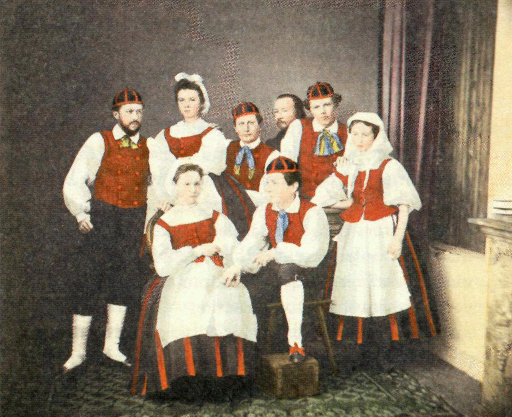

Kultur
Folket
På vissa sätt är finländare ett egendomligt folk, och vi njuter i hemlighet av att själva framföra den bilden av oss själva även om den inte alltid stämmer. En finländare kan uttryckslöst berätta skrönor, fnissa inombords och fortsätta berätta tills det går för långt. Att skämta med någon (eller till och med på någons bekostnad!) är ett finskt sätt att säga “jag gillar dig”. Det är nog med all rätt som man kan säga att finländaren är civiliserade och sociala, men de har ett buskigt sätt att visa det på.
De finländska folkdräkterna kan indelas i två huvudgrupper: västfinska och karelska. Det västfinska dräktområdet (dit de finlandssvenska orterna hör) har tagit intryck av de högre ståndens och borgarnas modedräkter, samt fått impulser och nya material bl.a. genom sjöfarten. Männens dräkter var inspirerade av soldatuniformen.
Finländaren är inte bra på kallprat, och pinsamma tystnader i konversationer ses inte som pinsamma alls. Tystnaden betyder bara att personen i fråga inte har något väsentligt att säga. Det är inte nödvändigt att fylla tomrummen med onödigt pladder. Å andra sidan är finländaren äkta – vi menar vad vi säger. “Ska vi ta en öl någon dag” betyder att du förr eller senare kommer att ta kontakt med personen för en öl, och den kommer att förvänta sig det.
Källa: visitfinland.com
Källa: uppslagsverket.fi
Traditioner
Om det så är påsk, midsommar eller första maj, sätter finländarna alltid sin speciella prägel på de nationella högtiderna.
Finländarna vet hur man ställer till fest, även om landets långa och mörka vintrar begränsar möjligheterna till utomhusaktiviteter. Å andra sidan är vintern en orsak till att så många av landets största högtider och festligheter firas under denna del av året. Högtider under vintern omfattar luciadagen och fastlagstisdagen. Dessa dagar är starkt rotade i den finländska kulturen.
När hela världen hyllar kärleken, har Finland sin unika tolkning av den 14 februari. Valentindagen firas i Finland i form av vändagen. Finländarna bestämde sig för att inkludera alla i denna dag. Vänner, familjemedlemmar, grannar, kolleger – och självklart kärasten också – kan alla motta kort, blommor och choklad på denna dag.
Källa: visitfinland.com
Musik
Folkmusik
Den finlandssvenska folkmusiken är en av de fem folkmusiktraditionerna inom finländsk folkmusik som finns i Finland. Övriga traditioner är den östfinska folkmusiktraditionen med Kalevala och gråtkväden, den västfinska folkmusiktraditionen, den romska folkmusiktraditionen och den samiska folkmusiktraditionen.
Källa: Wikipedia
Klassisk musik
Klassisk musik är en vid musikgenre kopplad till europeisk konst, etablerad kultur och kulturarv sedan 1700-talet. Begreppet exkluderar liknande musik utanför den västerländska kultursfären, folkmusik, liksom populärmusik och musik med bas i den afroamerikanska traditionen. Däremot inräknas de relaterade begreppen klassisk musik (seriös musik), klassicistisk musik, (västerländsk) konstmusik, nutida musik och modern musik.
Källa: Wikipedia
Populärmusik
Populärmusik är en musikalisk genrebeteckning som använts sedan 1800-talet. Den syftar på en musikstil som är mer lättillgänglig än mer anspråksfull musik (så kallad konstmusik). Popmusik eller bara pop är etymologiskt en förkortning av populärmusik. Som begrepp myntades den i svenskt språkbruk under 1960-talet som en ersättning för 1950-talets rock och som en överordnad benämning för populär ungdomsmusik. Även de nya stilar (The Beatles, Rolling Stones med flera) som växte fram under 1960-talet betecknades då som pop.
Källa: Wikipedia